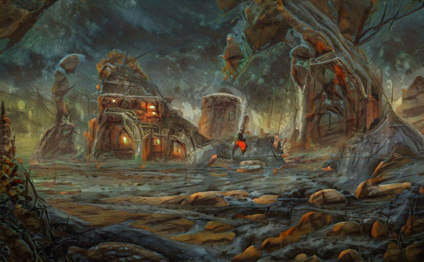

March the 17th
Entry #7: Notes on the Structures, Trade and Culture of Alis
The principality of Alis has a lot of architectural structures, somewhat art nouveau but also brutalist. The towns are built on an uplift or overhanging marsh and on the banks of two great rivers, the Black and the White, the river either side of which run through wide tree-lined canals.

It is a big producer of camels and ducks and lentils and carrots and peas and is a bit of a cultural crossroads between what would be the far east of Europe and the plains of central and western Africa back in our world.
Previous Page Next Page